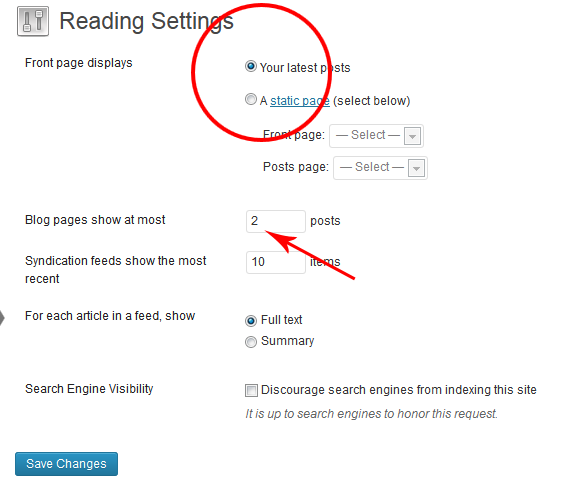
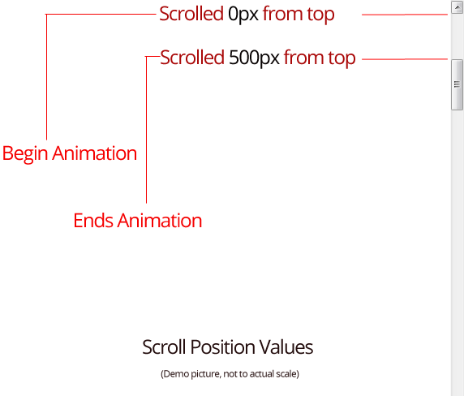
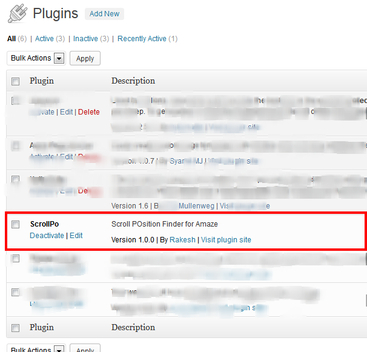
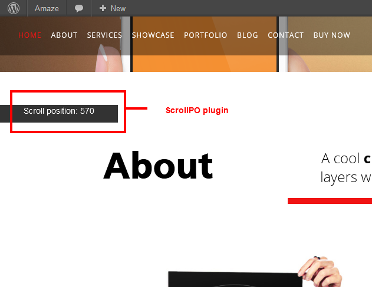
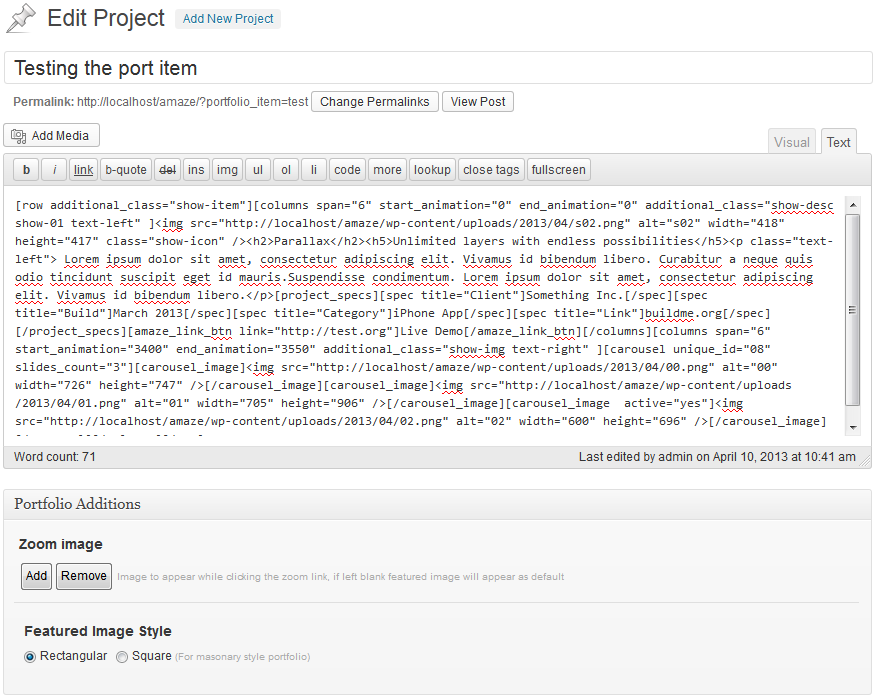
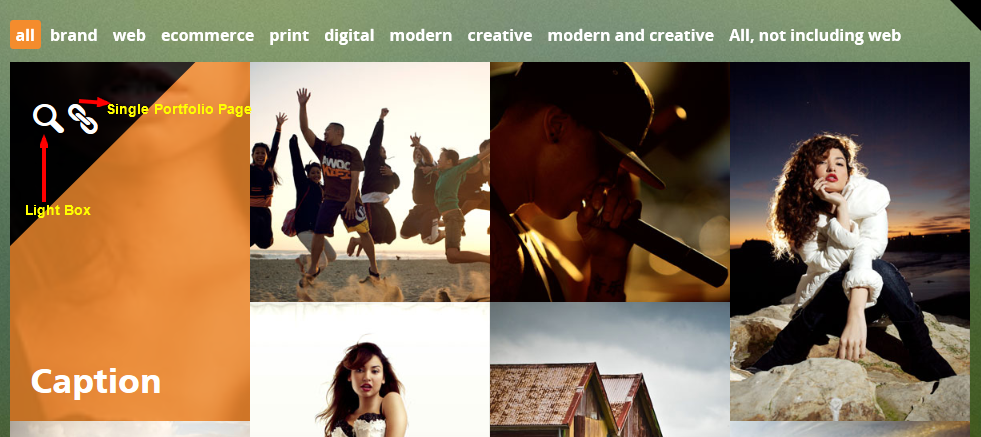
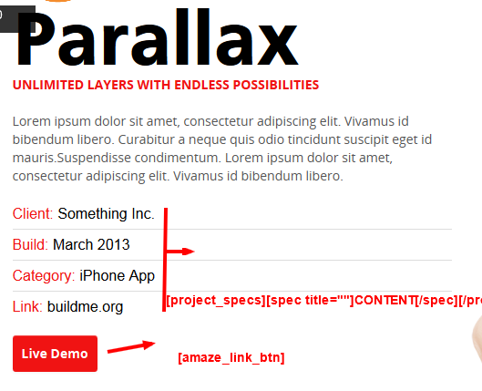

Created: 18/Apr/2013
By: Rakesh Suryavardhan AKA Ron
Email: info@designova.net
Thank you for purchasing our theme. If you have any questions that are beyond the scope of this help file, please feel free to email via our user page contact form here. Thanks so much!
1. After unzipping the 'Downloadpack' you can see a folder named Amaze this is the theme folder
2. Upload the folder Amaze to your server (upload to wp-content/themes/ directory) using any FTP applications like Filezilla.
3. Login to your wordpress administration and navigate to Appearance » Themes
4. Activate theme Amaze
Amaze is a one page enabled multi page theme. That means you can include differnt pages created from the wp-admin panel to a single page that appears as the index page of your website. You can add a page to 'onepage' by clicking 'Include to Onepage' meta option 'Yes' while creating the pages. 'Onepage' enabled pages will appear as sections in index page.
For the proper working of the theme you need to set your 'Front page displays' to 'Your latest posts' under Settings >> Reading section of your wp-admin.
Amaze is made using the most advanced CSS framework 'Twitter Bootstrap'. It uses javascript based parallax and scroll libraries to create parallax and scroll trigger based effects. All of the animation effects are created using CSS3 and triggered based on the scroll poition value. That means when scroll reaches a certain value the effect begins.
Amaze has got variety of options to customize the theme to great level. We are also supplying a wordpress plugin (ScrollPO) to find the scroll poistion values easily. We have also created some built-in effects for most of the shortcodes and page titles along with the freedom to add your own css3 based effects.
Scroll position is the value (in pixels) that how much you have scrolled from top of the browser. Here is a diagramatic explanation.
Begin Animation and End animation means, when the scroll reaches 0px the animation effects starts and works till the scroll reaches 500px. You can use any values like this for creating the effects that triggers on scroll positions.
Finding the scroll poition values is actually a difficult job, that why we comes up with an easy solution. We are bundling a wordpress plugin along with the download pack under the plugins section. Inside the plugins folder you can find 'scrollpo' folder. Upload that folder to wp-content/plugins directory. After uploading the plugin folder go to plugin section in your wp-admin panel and activate the plugin.
After activating you can see a black floating strip that displays the value of scroll position according to the scroll.
Only the logged in user can see the scrollPO display.
Theme options panel (Appearance >> Theme Options) contain many custom settings exclusive for the theme. Read on to know more
1.Main Logo Upload Main Logo which appears on the top right corner of the website
2.Mobile Logo Upload Logo which appears with the mobile menu
3.Footer Title Text to appear above the address block. (Optional)
4.Optional Footer Logo Image to appear instead of Text above the address block.
5.Address Address to appear on the footer.
6.Copyright Copyright text
1.Favicon: Website favicon
2.Background Images:Batckstrech background slideshow that appears as page backgrounds.
3.Theme Highlight Color: Replace our orange color with your own colors.
4.Custom CSS: Custom css rules for your theme.
Fill your social media links here, these links will get displayed on the footer. If you leave the fields blank that particular icon will not get displayed. Apart from RSS feed you just need to fill the fields with your IDs only.
This where you set up the contat page elements, to appear the contact page on your website you have to use contact form shortcode
Contact form Email, you have to fill this filed with a valid email, other wise you wont receive emails from the contact form.
Contact form Subject, Subject for email receiving through contact form
First you have create categories for displaying the filterable portfolio. Group your projects to respective categories for the proper working of filters. Adding a portfolio item is same as adding a post in wordpress. Instead of regular post we have some custom fields here to fill. Please not that you must add a featured image with every portfolio post you add.
You can see two metabox options while adding portfolio item, one is 'zoom image' and the other is 'Featured Image Style'. Zoom image is for the image to appear in lighbox and Featured Image Style is to choose the appearance of featured image in masonary grid.
You can post any type contents inside the portfolio. There will be single page for every portfolio post linked from the filterable portfolio grid.
Filterable Portfolio grid will appear on a page with '[portfolio]' shortcode.
We have got a great set of shortcodes which are reusable to a great extend. You may use them alone or shall use them in groups. For a better understanding we have provided the dummy data we used on our demo. Please do import and refer them. In addition we have pinned shortcodes as Wordpress editor buttons, so you can add them in just one click. NB: We strongly recommed you to refer the demo content for a better understanding of the grouped shortcodes.
[row additional_class=""][/row]. This is same as row class in bootstrap. Additional_class attribute is for adding any specific css classes.
[columns span="6" start_animation ="" end_animation="" animate_in="" animate_out="" additional_class="" animation_preset=""][/columns]. This is same as columns in bootstrap grid (Read more about bootstrap grid here) but loaded with many additional features. Columns has got variety of attributes to customize the theme to a great extend. Columns are row dependant. Each row can hold 12 columns.
span: We are using 12 column grid so the span values can be 1-12.
start_animation: Scroll position value to start the animation effect (Use ScrollPO to find the value ).
end_animation: Scroll position value to end the animation effect (Use ScrollPO to find the value ).
animate_in and animate_out: They are optional attributes. If you are not using 'animation_preset' attribute you can use them to create your own effects.
Consider an example of creating fade effect for a column with out presets. It will be like this.
[columns span="6" start_animation ="1400" end_animation="1500" animate_in="opacity:0" animate_out="opacity:1" ]
In this example , column will appear while scroll reaches value of 1400 to 1500. As we are using css3 opacity rule, it will create a fade in effect.
additional_class: This attribute is for adding any specific css classes
animation_preset: We have created a set of animation effects for columns. We will explain them in coming sections. If you are using 'animation_preset' 'animate_in' and 'animte_out' attributes will not work.
Skillset is for animated skillset as you can see in the about section of the demo. Its a grouped shortcode.
[skillset][skill start_animation="" end_animation="" size="" color=""][/skill][/skillset]
[skillset] is the container and the [skill] displays the skill. Skill has got four attributes in which 'start_animation' and 'end_animation' are scroll position values. Size is for the strength of your skill
in percentage (0-100). For color you can fill your favourite hexa decimal color code (Ex: #cdffdh).
Skillset has got built-in growing animation effect.
[portfolio]: It will display filterable animated masonary portfolio grid. NB: You should not wrap 'portfolio' shortcode with 'row' or 'columns' shortcodes.
[team_member start_animation="" end_animation="" animate_in="" animate_out="" animation_preset=""][member_name designation=""][/member_name][member_image image="PATH"][/member_image][member_description][/member_description][member_social facebook="" twitter="" linkedin=""][/member_social][/team_member]
'start_animation','end_animation','animate_in','animate_out','animation_preset' attributes are same as them in columns shortcode. [team_member] is a six span column, so each [row] can only have two [team_member]. (Check the demo data)
[contactform] shortcode renders the contact form as you can see in the contact page of the demo.
[testimonial start_animation="" end_animation="" client_name="" company=""]CONTENT HERE[/testimonial]
It has built-in animation properties. You can see the demo inside services page in the demo section. This shortcode is [row] dependant.
[flipbox start_animation="" end_animation="" type="01/02/03" title=""]CONTENT HERE[/flipbox].
'start_animation' and 'end_animation' are scroll position values. 'type' attribute can have three differnt values 01,02 or 03 for three differnt background styles. These boxes has got 3D flip-in effect.
We have shortcodefied the bootstrap carousel.
[carousel unique_id="" slides_count="" pagination="" pagination_position="" nextprev=""][carousel_image active=""]Your Image[/carousel_image][/carousel]
Every carousel should have a 'unique_id' preferably numbers and should also mention the 'slides_count' for the proper working of paginator. You can show/hide pagination using 'pagination'attribute. Its true by default you can hide pagination by passing false to 'pagination' attribute. 'pagination_position' attribute can have values 'left' or 'right'. If value 'nextprev' is true pagination will not work , instead of that next and previous buttons will appear.
[carousel_image active=""]Your Image[/carousel_image]
These are the elements for carousel, repeat them inside the carousel shortcode. You can add <img src=""> of your image inside the content part of this shortcode. If the 'active' attribute set to true , that particular image will be the active image of the carousel (Set it true for only one image in a carousel).
[project_specs][spec title=""]CONTENT[/spec][/project_specs]
You can repeat the spec shortcode. Here is how it gets displayed.

[amaze_link_btn link="full link"]TEXT[/amaze_link_btn]
It has got link attribute and it displays like a button but actually its a link.(Check the above picture)
[twitterfeed] shortcode for the live feed that appears on the splash screen in demo.
You can include or exclude a page from the one page sections by using this switch.
There are two differnt heading styles dark ie black and light ie white. You can choose them according to your backgrounds
A small paragraph that appears on the right side of the heading.
A set of animation effects to choose for heading and heading highlight.
Background image for page/section and the position arrangements.
Scroll position values to start and end animation effects for headings and background images for splash screen
We have two page templates apart form the Default Template. Firt one is 'Home Splash Screen' which has got animation effect for background image and clean space without headings etc. The next one is 'Blog Page'which displays two latest posts and an ajax based pagination. NB: Please set 'Blog pages to show at most' to '2' in settings >> reading section.
There are two menu locations first one is 'Primary Menu ' and 'Footer Quick Links'. Primary menu is the main menu for the theme and 'Footer Quick Links' appears on the left side of the footer segment.
All those shortcodes with animation_preset attribute can use these effects along with scroll position values for animation effects.
We have tried to cover all basic stuffs needed for you to quickly customize this template. That is all for the initial setup and basic customization. If you need help, we will be always in your reach. Kindly write to us at: info@designova.net. We will be glad to help you. We appreciate you follow us on twitter, we are @designovastudio on twitter. We are also open for any advanced customization project you may have. Kindly email us, so we can get back to you with a nice plan for such projects. We hope you have found this quick tutorial as helpful. If you like our works, please rate our themes at themeforest (theme’s page). This will help us to produce more awesome themes. http://www.themeforest.net/user/designova Please visit our official site for more new stuffs and freebies.